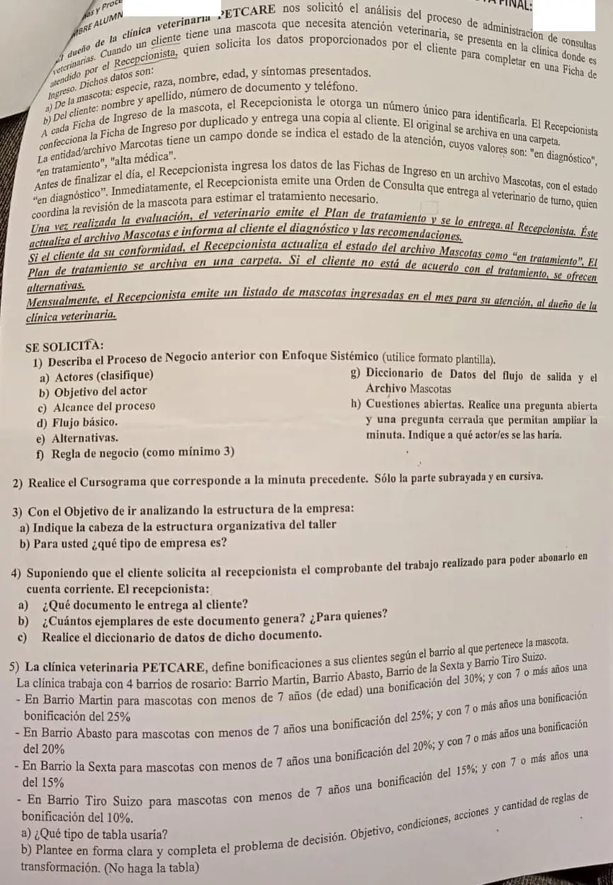

3° parcial, 2024 (clínica veterinaria)
3° parcial, 2024
Enunciado


Propuesta de respuesta
Respuesta no verificada. La propuso Luta Studios con inteligencia artificial y ningún docente la revisó. Puede tener errores.
Ejercicio 1. Proceso de negocio con enfoque sistémico
Proceso de negocio. Administración de consultas veterinarias.
Objetivo del actor. El cliente quiere que atiendan a su mascota y le indiquen el tratamiento que necesita.
Actores.
- Principal. El cliente.
- De apoyo. El Recepcionista y el Veterinario de turno.
- Pasivo. El dueño de la clínica, que recibe el listado mensual.
Alcance del proceso. Desde que el cliente se presenta en la clínica con su mascota hasta que el Recepcionista emite el listado mensual de mascotas para el dueño.
Evento externo iniciador. Un cliente con una mascota que necesita atención veterinaria se presenta en la clínica.
Flujo básico.
- El Cliente se presenta en la clínica con su mascota.
- El Recepcionista solicita al Cliente los datos de la mascota y los suyos.
- El Cliente informa la especie, raza, nombre, edad y síntomas de la mascota, y su nombre y apellido, número de documento y teléfono.
- El Recepcionista confecciona la Ficha de Ingreso por duplicado, con un número único.
- El Recepcionista entrega la copia de la Ficha de Ingreso al Cliente y archiva el original en una carpeta.
- El Recepcionista ingresa antes de finalizar el día los datos de las Fichas de Ingreso en el archivo Mascotas, con el estado «en diagnóstico».
- El Recepcionista emite una Orden de Consulta y se la entrega al Veterinario de turno.
- El Veterinario coordina la revisión de la mascota y la evalúa.
- El Veterinario emite el Plan de tratamiento y se lo entrega al Recepcionista.
- El Recepcionista actualiza el archivo Mascotas.
- El Recepcionista informa al Cliente el diagnóstico y las recomendaciones.
- El Cliente da su conformidad.
- El Recepcionista actualiza el estado de la mascota en el archivo Mascotas como «en tratamiento».
- El Recepcionista archiva el Plan de tratamiento en una carpeta.
- El Recepcionista emite una vez por mes el listado de mascotas ingresadas en el mes para el dueño de la clínica.
Alternativas.
- Paso 12. El Cliente no está de acuerdo con el tratamiento. El Recepcionista le ofrece alternativas.
Reglas de negocio.
| Regla | Tipo |
|---|---|
| Cada Ficha de Ingreso tiene un número único que la identifica | HE |
| La Ficha de Ingreso se hace por duplicado, con la copia para el cliente y el original archivado | HE |
| Antes de finalizar el día se pasan las Fichas de Ingreso al archivo Mascotas | AD |
| Toda mascota entra al archivo Mascotas con el estado «en diagnóstico» | HE |
| Si el cliente da su conformidad, el estado pasa a «en tratamiento» | AD |
| El estado de la atención es «en diagnóstico», «en tratamiento» o «alta médica» | HE |
Diccionario de datos.
Flujos de datos de salida
S1 inform-diagnóstico = nro-ficha + nombre-mascota + diagnóstico + 1{ recomendación }N
S2 listado-mascotas-mes = mes + 1{ nro-ficha + datos-mascota(e) + nombre + apellido + estado(D) }N
+ cantidad-mascotas
Entidad
Mascotas = nro-ficha + datos-mascota(e) + datos-cliente(e) + estado(D)
+ (diagnóstico + tratamiento)
Estructuras de datos
datos-mascota(e) = especie + raza + nombre-mascota + edad + síntomas
datos-cliente(e) = nombre + apellido + nro-documento + teléfono
Elementos de datos discretos
Atributo: estado (D)
Descripción: Estado de la atención
Valores posibles: En diagnóstico, en tratamiento, alta médicaCuestiones abiertas.
- Abierta, al Recepcionista. ¿Qué pasa con el Plan de tratamiento cuando el cliente no está de acuerdo?
- Cerrada, al dueño de la clínica. ¿Una mascota que ya fue atendida antes recibe una Ficha de Ingreso nueva?
Ejercicio 2. Cursograma
Solo la parte subrayada, desde que el veterinario emite el Plan de tratamiento.
Tocá el dibujo para verlo en pantalla completa.
Ejercicio 3. Estructura
a) La cabeza estratégica y ejecutiva es el dueño de la clínica. La consigna dice «del taller», pero la minuta es de la clínica.
b) Es una empresa de servicio. Su actividad es atender mascotas, no producir ni comercializar bienes.
Ejercicio 4. Comprobante del trabajo
a) La factura. Detalla lo vendido, las condiciones y que se cargó en la cuenta del comprador, que es lo que necesita quien paga en cuenta corriente.
b) Dos ejemplares. El original para el cliente y el duplicado para la clínica, que registra la deuda en la cuenta corriente.
c)
factura = nro-factura + fecha + datos-clínica(e) + datos-cliente(e)
+ 1{ cantidad + descripción + precio-unitario + importe }N
+ (bonificación) + total + condición-pago(D)
datos-clínica(e) = razón-social + CUIT + domicilio
datos-cliente(e) = nombre + apellido + nro-documento + domicilio
Atributo: condición-pago (D)
Descripción: Cómo paga el cliente
Valores posibles: Contado, cuenta corrienteEjercicio 5. Bonificaciones por barrio
a) Una tabla de entrada extendida. El barrio tiene cuatro valores, y en entrada limitada obligaría a cuatro condiciones.
b) Planteo.
Objetivo. Determinar la bonificación que corresponde a cada cliente según el barrio y la edad de la mascota.
| Condición | Valores | |
|---|---|---|
C1 | Barrio | Martin, Abasto, la Sexta, Tiro Suizo |
C2 | Edad de la mascota | Menos de 7 años, 7 años o más |
| Acción | Valores | |
|---|---|---|
A1 | Aplicar la bonificación | 30 %, 25 %, 20 %, 15 %, 10 % |
Reglas de transformación. . En entrada limitada serían 5 condiciones y columnas.
Respuesta no verificada. Puede tener errores.
Se armó con la página del 2° parcial (plantilla de enfoque sistémico, diccionario de datos, cuestiones abiertas, símbolos y reglas del cursograma y el ojo «Cuando el enunciado marca solo una parte»), la del 1° parcial (comprobantes y Mintzberg), la del final (tipo de empresa) y la del 3° parcial (entrada limitada y extendida y cómo plantear el problema de decisión).
Quedó en duda: La consigna 3 habla «del taller», como si viniera del otro examen. El apunte no dice cuántos ejemplares tiene la factura, y los dos de la respuesta son los habituales. Si la factura es el comprobante pedido o tendría que ser otro, como una nota de débito, lo decide la cátedra. En el cursograma, la minuta no dice qué pasa con el Plan de tratamiento si el cliente no está de acuerdo, ni cómo se dibuja un archivo digital. El listado mensual no tiene por qué salir después de cada caso, por eso arranca con una demora suelta. Contar 5 condiciones en entrada limitada sale de 4 barrios más la edad.
¿Cómo te fue?
Marcá cada tema del examen.
- Enfoque sistémicoEl proceso de negocio con enfoque sistémico, en 2° parcial
- CursogramaSímbolos, en 2° parcial
- EstructuraEstructura organizacional, en 1° parcial
- ComprobantesClasificación de los comprobantes, en 1° parcial
- Tabla de decisiónTabla de decisión (decisiones programadas), en 3° parcial